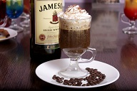
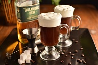
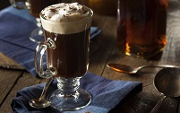

Кофе Айриш
250 мл
Стоимость:
220
руб.
Айриш кофе или кофе по-ирландски (в некоторых источниках — ирландский кофе) один из самых
известных в мире кофейно-алкогольных коктейлей. Он входит в список официальных коктейлей
Международной ассоциации барменов. Оригинальный рецепт и вкус коктейля претерпевает
метаморфозы в разных странах и получает необычные вкусовые интерпретации в руках опытных
барменов и бариста. В его состав входят такие ингридиенты, как жаркий кофе, хороший
ирландский виски, сахар, а так же взбитые сливки.
Известно множество небылиц о происхождении ирландского кофе. Наиболее правдоподобная версия
приписывает коктейль Джо Шеридану, главному шеф-повару ресторана Flying Boat в одном из
терминалов аэропорта в Фойнсе, графство Лимерик в начале 1940-х гг.



Однажды поздней ночью зимой 1943 года самолет вылетел из Фойнса в Нью-Йорк. Спустя нескольких
часов полета в плохую погоду капитан решил вернуться в Фойнс, чтобы дождаться более
безопасных условий. Сообщение азбукой Морзе было отправлено в диспетчерскую Фойнса, чтобы
предупредить о возвращении. Персонал вызвали обратно, а пассажиров после посадки разместили
в ресторане. Когда Джо попросили приготовить что-нибудь особенное, чтобы согреть усталых
пассажиров, он с воодушевлением добавил им в кофе хорошего ирландского виски. Один пассажир
подошел к нему и поблагодарил за чудесный кофе, спросив, использует ли он бразильский кофе?
Джо шутливо ответил: «Нет, это был ирландский кофе!»
Несколько недель спустя шеф Шеридан постучал в дверь кабинета начальника и показал ему свой
новый напиток в бокале на ножке, спросив: «Как насчет такого варианта?» Начальник ответил:
«Гениально, шеф!» Так родился ирландский кофе, который продолжают подавать пассажирам в
Фойнсе до сих пор.
Напиток очень калориен и содержит довольно много алкоголя, что нужно учитывать тем, кто
следит за фигурой. Молодым людям до 18 лет пить айриш кофе нельзя. Коктейль противопоказан
при нарушениях сердечно-сосудистой системы, диабете, обострении заболеваний ЖКТ. После
употребления кофе по-ирландски запрещается садиться за руль транспортного средства!
Обратно в меню
Стоимость:
220
руб.